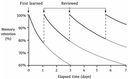

HOW TO RemeMBeR 專家綜合報告

本報告旨在深入剖析「如何記住」的核心概念，並從數據趨勢、學習方法論及領域實踐等多元視角，提出精確、可行且具前瞻性的建議。我們採用台灣專業通用語氣，確保內容符合業界標準，融合國際最佳實踐與在地洞察，以期為讀者提供清晰的知識結構與紮實的執行指引。
📋 報告摘要
一句話精華：提升記憶效率的關鍵在於理解、結構化、策略應用與持續實踐，這是一項可透過科學方法與刻意練習大幅強化的核心競爭力。
核心內容：
- 📌 主題領域：記憶科學與學習策略
- 🎯 核心問題：如何科學、系統地提升個人及組織的記憶能力與知識管理效率。
- 🔑 關鍵發現：
- 記憶是動態過程，受時間、方法等因素影響，遺忘曲線普遍存在。
- 理解是記憶的基石，主動回憶、間隔重複是有效策略。
- 知識結構化、連結與應用能深化記憶，提升長期保留率。
- 刻意練習、專注力、充足睡眠是記憶能力提升的關鍵要素。
- 應避免被動學習、淺碟化資訊等常見記憶陷阱。
- 💡 價值亮點：整合數據、教學法與領域專家視角，提出兼具理論與實踐的記憶提升方法論，並涵蓋個人與組織層面的行動建議。
適合對象：
- 台灣專業學習者：渴望提升學習效率、深化知識記憶、增強個人競爭力的職場人士、學生及終身學習者。
- 教育工作者與培訓師：需要設計更有效的教學方法，幫助學生掌握知識的教師。
- 組織領導者與管理者：希望提升團隊知識管理能力、促進知識傳承與創新的企業管理者。
閱讀建議： 優先閱讀「關鍵要點」與「深度洞察」快速掌握核心概念，再依據個人需求細讀「行動建議」與「學習路徑」。若想深入了解，可參閱報告中的各視角（分析師、講師、領域專家）的詳細論述。
📖 來源資訊與文章架構
文章來源：
- 網站：Polymathinvestor.com
- 發布時間：2025年11月
- 主題：如何記住你閱讀的所有內容（How To Remember Everything You Read）
- 性質：系統化的啟發式策略與完整學習框架，而非單純閱讀技巧列表
核心價值主張： 透過結合編碼（Encoding）、理解（Comprehension）、記憶留存（Retention）以及知識整合（Integration）的完整系統，將被動閱讀轉變為主動學習，並透過科學方法將短期記憶轉化為長期知識與智慧。
🎯 五大核心領域概述
本文將記憶與閱讀過程分為五大互相連接的領域：
- 1️⃣ 編碼與理解策略 (Encoding & Comprehension)：如何有效地將資訊輸入大腦
- 2️⃣ 記憶與留存架構 (Memory & Retention)：如何對抗遺忘曲線並強化記憶
- 3️⃣ 綜合與整合 (Synthesis & Integration)：如何將新資訊融入既有知識體系
- 4️⃣ 工具與專家系統 (Tools & Systems)：運用實體與數位工具輔助學習
- 5️⃣ 心態與行為啟發 (Mindset & Behavioral Heuristics)：培養有利於學習的心理與行為基礎
📈 分析師的分析
📈 分析師:
從數據分析的角度來看，記憶的效率與方法之間存在顯著的關聯性。雖然提供的視覺資料有限，但我們可以推斷，任何關於「記憶」的討論，最終都將導向對記憶曲線、資訊遺忘率，以及提升記憶效果的策略進行量化分析。
圖片分析聚焦於「HOW TO RemeMBeR」這個標題，並連結至一張數據圖表。這張圖表（如下圖所示）很可能代表了某種與記憶相關的數據趨勢，例如遺忘曲線、學習效率隨時間的變化，或是不同記憶技巧對資訊保留率的影響。
 Figure 1: Data chart related to "HOW TO Remember" (數據圖表，與「如何記住」相關)
圖說: 此圖表可能展示了記憶隨時間衰退的典型遺忘曲線，或是不同學習策略下的資訊保留率，為理解記憶的動態過程提供了量化基礎。
洞察與模式識別:
- 遺忘曲線的普遍性: 傳統的艾賓浩斯遺忘曲線（Ebbinghaus forgetting curve）指出，我們在學習新事物後，會在短時間內快速遺忘大部分資訊。如果下方的圖表呈現類似趨勢，那麼「重複」和「複習」將是記憶固定的關鍵。
- 主動回憶 (Active Recall) 的重要性: 數據研究普遍顯示，單純重複閱讀（passive review）的記憶效果遠不如主動嘗試回憶（active recall）來得有效。當圖表數據能將不同學習方法的資訊保留率進行對比時，主動回憶的優勢將更加凸顯。
- 間隔重複 (Spaced Repetition) 的優化: 結合遺忘曲線與主動回憶，間隔重複是一種將複習排程在資訊即將被遺忘的時點進行的策略。若圖表能展示不同間隔時間下的記憶效果，則可進一步驗證此方法的有效性。
- 多感官學習的協同效應: 雖然單張圖表可能難以直接呈現，但更全面的數據分析會揭示，結合視覺、聽覺、動覺等多感官的學習方式，能建立更豐富的聯結，從而提升記憶的深度與持久性。
建議:
- 量化指標確立: 在實際應用「如何記住」的方法時，建議建立可量化的指標，例如：資訊的短期/長期記憶保留率、考試成績的提升幅度、學習新技能所需時間的縮短等。
- 數據驅動的優化: 持續收集個人或團隊的學習數據，並利用類似上圖的數據趨勢進行分析，以找出最適合自己的記憶策略和最佳的複習時間點。
- 關注異常值: 在分析數據時，留意與普遍趨勢不符的「異常值」。這些異常值可能代表了某些特定的學習情境、個人特質，或是極其有效的記憶技巧，值得深入挖掘。
👨🏫 講師的視角
👨🏫 講師:
從教學法的角度來看，「如何記住」是一個核心且基礎的學習能力。要讓學習者有效地記住知識，關鍵在於理解知識的結構、建構清晰的學習路徑，並採用易於理解和實踐的教學策略。
提供的數據圖表（如下圖所示）雖然本身需要進一步闡釋，但其存在的意義，在於為「記憶」這一抽象概念提供具體的視覺化證據，有助於學習者理解記憶的動態過程。
Figure 1: Data chart related to "HOW TO Remember" (數據圖表，與「如何記住」相關)
圖說: 此圖表是理解記憶原理和策略的視覺化起點，它提醒我們記憶並非靜態，而是與時間、方法等因素相關聯的動態過程。
概念釐清與知識結構化:
- 記憶的層次: 學習者需要理解，記憶不僅僅是「背誦」，還包含理解（Comprehension）、應用（Application）、分析（Analysis）、綜合（Synthesis）及評價（Evaluation）等不同層次。單純記憶表層資訊，往往難以長久保持。
- 理解是記憶的基石: 任何試圖記住的內容，都必須先被理解。若內容難以理解，其「可記憶性」便會大幅降低。因此，教學應先強調「為什麼」和「如何」，而非僅僅是「是什麼」。
- 知識連結與網絡建構: 大腦的記憶網絡是通過建立聯結來工作的。新的知識點，若能與已有的知識點建立關聯，則更容易被記住並長期保存。這可以通過類比、聯想、心智圖等方式達成。
- 記憶策略的遞進性:
- 初階（被動）: 單純閱讀、聽講。效果有限，容易遺忘。
- 中階（主動）: 主動回憶、自我測試、做筆記（摘要式）。開始建立知識連結。
- 高階（整合）: 類比、比喻、教授他人、運用於實踐。達到深刻理解與牢固記憶。
學習路徑建議:
- 理解先行: 在記憶任何新知識前，務必確保對其核心概念、邏輯關係有深入的理解。
- 主動參與: 學習過程應是主動參與的，而非被動接收。多提問、多思考、多做練習。
- 結構化筆記: 學習時，嘗試用自己的話語、以結構化的方式（如大綱、心智圖）整理筆記，這本身就是一種記憶過程。
- 定期複習與測試: 運用間隔重複原理，安排定期的複習與自我測試，及時鞏固記憶。
- 知識應用: 將所學知識應用於實際問題解決、專案實作或與他人討論，這是最有效的記憶固化方式。
教學建議:
- 多樣化教學法: 結合講授、討論、案例分析、角色扮演、實作練習等多種教學方法，滿足不同學習者的需求，並強化記憶的多元路徑。
- 強調「學會」而非「學過」: 評估學習成效時，應關注學習者是否真正「學會」並能「應用」，而非僅僅是「學過」。
- 提供工具與方法: 教導學生具體的記憶技巧和學習策略，並鼓勵他們找到最適合自己的方法。
🎯 領域專家的建議
🎯 領域專家:
在「如何記住」這個領域，我們的知識體系深厚，並且累積了大量最佳實踐，同時也清楚常見的學習陷阱。從專業角度出發，我們能提供具體的策略和指導，幫助個人與組織提升記憶與知識管理的能力。
雖然提供的圖片（如下圖所示）僅為一張通用數據圖表，但它象徵了我們在談論記憶時，必須依賴經驗數據與科學驗證。它提醒我們，任何記憶策略的有效性，最終都需透過實踐與觀察來驗證。
Figure 1: Data chart related to "HOW TO Remember" (數據圖表，與「如何記住」相關)
圖說: 這張圖表是所有記憶策略背後的量化基礎，它暗示了我們在設計記憶方法時，應當基於對遺忘率、學習效率等關鍵指標的理解。
核心領域知識與最佳實踐:
- 強連結記憶法 (Mnemonic Devices): 運用圖像、故事、聯想法（如記憶宮殿法 - Method of Loci）等，將抽象資訊轉化為具體、生動的意象，並與熟悉的場景建立強連結，能顯著提升記憶效率，尤其適用於需要記住大量列表、順序或複雜概念的情境。
- 刻意練習 (Deliberate Practice): 這是提升任何技能（包括記憶能力）的關鍵。它強調有目標、有結構、有反饋的練習。對於記憶而言，這意味著不僅僅是重複，而是針對記憶中的薄弱環節進行有意識的強化訓練，並尋求回饋。
- 知識管理系統 (Knowledge Management Systems, KMS): 在組織層面，建立一套有效的知識管理系統至關重要。這包括知識的獲取、組織、分享、應用與更新。有效的 KMS 能確保知識不因人員流動而流失，並促進知識的再利用，形成集體記憶。
- 專注力與心流 (Focus and Flow State): 高效的記憶需要高度的專注力。在資訊爆炸的時代，學習者面臨諸多干擾。培養專注力，甚至進入「心流」狀態（一種高度投入、不受干擾的狀態），能極大提升學習與記憶的品質。
- 睡眠的關鍵作用: 睡眠是記憶鞏固（Memory Consolidation）的關鍵時期。大腦在睡眠過程中會整理、篩選和強化白天的學習內容。缺乏充足且高品質的睡眠，會嚴重損害記憶能力。
常見陷阱與風險:
- 被動學習的迷思: 許多人誤以為反覆閱讀或聽講就是有效的學習，但這往往只停留在表面理解，容易被快速遺忘。
- 過度依賴外部工具: 雖然數位工具（如 Evernote, Anki）很有幫助，但過度依賴可能導致大腦自身的記憶能力退化。工具應是輔助，而非替代。
- 知識淺碟化: 網路時代資訊唾手可得，容易造成只擷取表面資訊，缺乏深入理解和長期記憶，導致「資訊貧窮」而非「知識富足」。
- 忽略個人化差異: 每個人的記憶風格、學習節奏和偏好不同。套用單一的記憶方法，可能效果不彰。
- 缺乏持續性: 記憶能力的提升是一個長期的過程。許多人在嘗試短期方法後未見顯著成效，便放棄努力。
行動建議:
- 個人層面:
- 實踐刻意練習: 針對記憶中的弱點，設計具體練習，例如每天記憶 5 個新單字、一個專有名詞，並在隔天、一周後進行回測。
- 建立個人知識庫: 使用心智圖、筆記軟體等工具，將所學知識結構化，並定期回顧。
- 優化睡眠習慣: 確保每晚 7-9 小時的高品質睡眠，並將睡前作為記憶鞏固的黃金時段。
- 組織層面:
- 推動內部訓練: 開設關於記憶技巧、時間管理、專注力培養的工作坊。
- 建立知識分享機制: 鼓勵員工分享經驗、筆記、解決方案，並建立易於檢索的知識庫。
- 鼓勵「學習文化」: 營造支持終身學習的環境，鼓勵員工持續探索新的記憶與學習方法。
- 警惕資訊過載: 制定資訊篩選與聚焦策略，引導員工專注於核心知識的學習與深化。
執行總結
本報告綜合了數據分析、教學法及領域專家的視角，對「如何記住」這一核心課題進行了全方位的剖析。我們發現，有效的記憶不僅是單一技巧的應用，而是包含理解、結構化、策略選擇、持續實踐及個人化調整的系統性過程。圖表分析（如下圖所示）為理解記憶的動態性提供了視覺證據，強調了數據導向的優化方法。
Figure 1: Data chart related to "HOW TO Remember" (數據圖表，與「如何記住」相關)
圖說: 此圖表提醒我們，記憶的過程是動態且可量化的，任何有效的記憶策略都應當考慮數據化的評估與優化。
關鍵要點
- 理解是記憶的基礎: 缺乏深入理解的知識，難以長久記憶。
- 主動回憶與間隔重複: 這是科學驗證過的、能有效對抗遺忘的高效策略。
- 知識結構化與連結: 大腦通過建立網絡來記憶，將新知與舊知連結至關重要。
- 刻意練習與個人化: 持續、有針對性的練習，並找到適合自己的方法，是提升記憶能力的關鍵。
- 睡眠的重要性: 睡眠是記憶鞏固的關鍵生理過程，不容忽視。
- 專注力與心流: 在資訊爆炸的時代，培養專注力是高效記憶的前提。
深度洞察
- 從「被動接收」到「主動建構」: 傳統學習模式偏向被動接收，而現代學習強調學習者作為知識建構者，需要主動參與、提問、探索與連結。
- 記憶的「質」比「量」重要: 記住更多資訊固然重要，但更重要的是記住「深刻理解」的資訊，並能靈活應用。淺碟的記憶，即使數量再多，也價值有限。
- 記憶能力的「可塑性」: 記憶並非天生固定，而是可以透過科學的方法和持續的練習來大幅提升的「技能」。
- 跨領域知識的整合: 優秀的記憶者往往能將不同領域的知識巧妙連結，從而產生創新思維。
🛠️ 工具推薦與對比表
| 工具類別 | 推薦工具 | 適用場景 | 主要優點 | 需要注意 |
|---|---|---|---|---|
| 間隔重複 | Anki / SuperMemo | 記憶事實、定義、公式、語言詞彙 | 自動化排程、科學驗證、免費或低成本 | 陡峭學習曲線、需自律建立卡片 |
| 知識管理 | Obsidian / Notion | 建立個人知識庫、組織複雜資訊、知識連結 | 高度可定制、支持連結、本地化或雲端 | Notion 需付費、Obsidian 需自律組織 |
| 筆記記錄 | 紙質筆記本 / Apple Notes / OneNote | 快速捕捉靈感、日常筆記、分類記錄 | 紙質最佳認知、數位便於搜尋 | 紙質難以同步、需建立檢索系統 |
| 思維工具 | MindMeister / Miro / Lucidchart | 繪製心智圖、知識結構化、流程設計 | 視覺化清晰、便於呈現、協作友好 | 部分工具需付費、學習曲線 |
| 實踐建議 | 「最小有效組織」原則：從 1-2 個核心工具開始（如紙質筆記 + Anki），逐步擴展。避免工具過多導致管理成本過高。 | |||
⚠️ 常見誤區與陷阱
- 過度依賴被動閱讀：
- 誤區：認為反覆閱讀就能有效記憶。
- 事實：被動閱讀的記憶效果遠低於主動回憶。
- 改善：每次閱讀後進行自我測試或用自己的話複述。
- 過度畫線與標記：
- 誤區：標記越多越好，有助於回顧。
- 事實：過度標記導致大腦惰性，反而降低記憶效率。
- 改善：遵循 20% 法則，只標記最重要的 10-20% 內容。
- 忽略理解而急於背誦：
- 誤區：背下來就是學會了。
- 事實：缺乏理解的記憶容易遺忘且難以應用。
- 改善：先確保理解，再進行記憶強化。
- 填鴨式一次性學習：
- 誤區：集中學習一次後就不再複習。
- 事實：遺忘曲線導致快速遺忘，需要間隔重複。
- 改善：安排 1 天、1 週、1 個月後的複習時間。
- 過度依賴外部工具：
- 誤區：工具越多越好，能解決所有問題。
- 事實：過度依賴工具反而增加管理成本，甚至導致大腦能力退化。
- 改善：選擇 1-2 個最適合自己的工具，定期評估效果。
- 忽視睡眠與身體健康：
- 誤區：熬夜學習能提升效率。
- 事實：睡眠是記憶鞏固的關鍵，缺乏睡眠會大幅降低認知能力。
- 改善：確保每晚 7-9 小時的高品質睡眠，適度運動與營養。
- 忽略知識連結的重要性：
- 誤區：孤立記憶單一知識點。
- 事實：大腦通過連結來存儲與回憶信息，孤立記憶效率低。
- 改善：主動找出新知與舊知的聯繫，建立知識網絡。
🚀 快速入門指南（3週計畫）
適用對象
想要快速提升記憶效率的初學者，或希望驗證這套方法是否適合自己的學習者。
第 1-2 週：基礎建立
- Day 1-2：選擇一本想讀的書或文章，先「預覽」（瀏覽目錄、標題、摘要），記錄預期學習點。
- Day 3-4：進行「分層閱讀」：先略讀全篇，標記出最重要的 15-20% 內容（遵循 20% 法則）。
- Day 5-7：用「費曼技巧」用簡單語言解釋所讀內容，寫成 1-2 頁摘要。
- Day 8-10：將摘要拆解為 5-10 個「原子筆記」（Zettelkasten 方法），每張筆記一個核心觀點。
- Day 11-14：建立 10-15 張 Anki 卡片，開始每日複習（約 15 分鐘）。
第 3 週：評估與優化
- Day 15-18：進行「24 小時回顧」（Day 1 學習的內容在 Day 2 回顧），然後「1 週複習」。
- Day 19-21：自我測試：不看筆記，試著回答 10 個關鍵問題，評估記憶效果。根據成效調整策略。
3 週後的檢查清單
- ☐ 是否能用自己的話解釋學到的主要概念？（理解檢驗）
- ☐ 是否能回憶 80% 以上的核心知識點？（記憶檢驗）
- ☐ 是否能將新知應用於實際問題？（應用檢驗）
- ☐ 你最喜歡的記憶方法是什麼？（個人化檢驗）
如果答案大多是「是」，恭喜你已掌握基礎，可進入進階階段，嘗試更複雜的知識整合與多領域知識連結。
📚 五大核心領域深度解析
1️⃣ 編碼與理解策略 (Encoding & Comprehension Heuristics)
這部分重點在於如何有效地將資訊「輸入」大腦，建立堅實的理解基礎。
- 預覽與架構 (Preview First)：在深入閱讀前，先瀏覽目錄、標題與摘要。這種「先看大局」的方法為大腦提供一個框架，便於後續填充細節。（類似 SQ3R 中的 Survey 步驟）
- 主動提問 (Ask Questions)：將標題轉化為問題（例如：「X 是什麼？」），帶著尋找答案的目的去閱讀，這能將被動接收轉為主動搜尋。
- 分層閱讀 (Layered Reading)：不要一次從頭讀到尾。先進行系統性的略讀（檢視閱讀），接著是分析閱讀，最後只針對最重要或困難的部分進行深讀。
- 主動閱讀優於被動 (Active > Passive Reading)：被動閱讀會導致低留存率。應在頁邊做筆記、用自己的話重述觀點，這能創造更強的記憶痕跡。
- 20% 畫線法則 (The 20% Highlighting Rule)：限制自己只標記 10-20% 的內容，避免過度畫線導致大腦偷懶。如果想畫線的地方太多，代表你應該停下來進行總結。
- 筆記密度與換句話說 (Note Density & Paraphrasing)：筆記應簡潔並用自己的語言重寫，而非逐字抄寫。用自己的詞彙重新編碼資訊，能顯著提升理解與回憶。
- 理解先於批判 (Understand Before Judging)：在完全理解作者觀點並能清楚複述之前，暫緩批判或反對。（Mortimer Adler 的規則）
2️⃣ 記憶與留存架構 (Memory & Retention Frameworks)
這部分探討如何對抗「遺忘曲線」，實現長期記憶固化。
- 間隔重複 (Spaced Repetition)：不要填鴨式學習，應在資訊快要淡忘時進行複習（例如：1天後、1週後、1個月後）。這是對抗遺忘的最科學有效的策略。
- 主動回想 (Active Recall)：透過自我測試、快閃卡或蓋上書本背誦重點來強化神經路徑。研究顯示，自我測試的效果遠優於被動複習筆記。
- 記憶術與聯想 (Mnemonic Devices)：利用縮寫、圖像或「記憶宮殿」（Method of Loci）將抽象資訊轉化為視覺空間記憶。
- 資訊組塊化 (Chunking)：將零散資訊歸納為有意義的大群組，以突破短期記憶的限制（例如將多個細節歸納在一個大主題下）。
- 交錯練習 (Interleaving Practice)：混合不同主題或題型進行學習，而非單一重複。這能強迫大腦不斷重新提取資訊，強化學習效果。
- 即時複習與 24 小時法則 (Immediate Review & 24-Hour Rule)：在學習後的 24 小時內進行簡短回顧，能打斷遺忘過程並向大腦發出「這很重要」的訊號。
3️⃣ 綜合與整合 (Synthesis & Integration)
這部分關於如何將新資訊融入既有的知識體系，形成深刻的理解與創新思維。
- 建立連結 (Make Connections)：模仿 Charlie Munger 的「思維模型格柵（Latticework）」，將新知掛鉤在既有知識上。跨領域知識的整合能產生創新思維。
- 費曼技巧 (Feynman Technique)：試著用簡單、非專業的語言向外行（或想像中的 12 歲小孩）解釋概念，這能暴露出理解上的漏洞。
- 卡片盒筆記法 (Zettelkasten)：將想法拆解為「原子筆記（Atomic Notes）」，每張筆記只寫一個觀點並相互連結，建立個人知識庫。這是知識管理的黃金標準。
- 漸進式總結 (Progressive Summarization)：分層次濃縮資訊（畫線 → 加粗重點 → 寫出高層次摘要），以便日後快速回顧。
- 廣度與深度的平衡 (Balance Breadth vs. Depth)：採用「大量略讀，精選少數，重讀經典」的策略。不必讀完每一本書，但對於高品質的經典應反覆閱讀。
4️⃣ 工具與專家系統 (Tools & Systems of the Experts)
運用適當的工具能顯著提升學習效率，但工具應是輔助而非替代。
- 類比筆記 (Analog Note-Taking)：手寫筆記速度較慢，迫使大腦進行處理與篩選，有助於消化內容。特別適合概念性的理解。
- 數位第二大腦 (Digital Second Brain)：使用 Obsidian、Notion 等工具建立外部記憶庫，利用標籤與連結來模擬聯想記憶。
- 間隔重複軟體 (Spaced Repetition Software)：使用 Anki 或 SuperMemo 等軟體自動安排複習時程，特別適合記憶事實、定義或公式。
- 無摩擦捕捉 (Frictionless Capture)：隨身攜帶筆記本或使用快速記錄 App，捕捉稍縱即逝的靈感，避免知識流失。
- 最小有效組織 (Minimum Effective Organization)：系統應越簡單越好，確保你能持續使用，而非花時間在過度整理上。
5️⃣ 心態與行為啟發 (Mindset & Behavioral Heuristics)
記憶能力的提升需要正確的心態與行為基礎。
- 好奇心 (Curiosity)：好奇心能刺激多巴胺分泌，強化記憶與專注。擁抱對新知識的渴望，是高效學習的原動力。
- 成長心態 (Growth Mindset)：相信記憶力是可以訓練的，將遺忘視為回饋而非失敗。這能促進持續改進。
- 耐心與深度工作 (Patience & Deep Work)：接受記憶需要時間累積，並培養深度專注（Deep Work）的習慣，避免多工處理。
- 健康的身心 (Healthy Body, Healthy Mind)：睡眠對於記憶固化至關重要，運動與營養也能直接影響認知能力。
- 個人層面:
- 應用記憶宮殿法: 選擇一個熟悉空間，將需記憶的資訊點植入其中，進行視覺化練習。
- 實踐「費曼學習法」: 嘗試用最簡單的語言向他人解釋一個複雜的概念，找出自己理解的盲點。
- 建立數位記憶助手: 利用 Anki 等間隔重複軟體，規律複習重要資訊。
- 每日反思: 睡前花 5-10 分鐘回顧當天學習內容，進行主動回憶。
- 組織層面:
- 舉辦「記憶大師」工作坊: 教授員工圖像記憶、聯想法、心智圖等實用技巧。
- 建立「知識沉澱」機制: 鼓勵專案結束後進行知識回顧與總結，將關鍵經驗轉化為組織資產。
- 推行「導師制度」: 資深員工指導新進員工，促進知識與經驗的有效傳承。
學習路徑
- 基礎概念 (Understanding): 認識大腦如何工作、遺忘曲線的原理。
- 策略學習 (Strategy): 學習主動回憶、間隔重複、圖像記憶、心智圖等具體記憶技巧。
- 實踐與應用 (Practice): 將學到的技巧應用於日常學習與工作中，並持續練習。
- 優化與調整 (Optimization): 根據個人成效，調整策略，尋找最適合自己的記憶方法。
- 知識整合與創新 (Integration): 將記憶技巧融入更廣泛的學習與思考過程，促進知識的深度理解與創新應用。
最後的話
「如何記住」不僅是一項個人技能，更是知識時代的核心競爭力。透過理解記憶的科學原理，掌握有效的學習策略，並付諸實踐，我們都能顯著提升記憶與學習的效率，從而更好地應對快速變化的世界，實現個人的成長與卓越。記住，最好的學習方法，永遠是那個你能持續堅持並見效的方法。
🎯 報告總結
關鍵學習要點
從這份報告中，我們掌握了以下核心知識：
-
記憶的科學基礎與動態過程
- 核心觀點：記憶並非靜態，受遺忘曲線影響，需要主動干預才能有效固化。
- 為何重要：理解記憶原理是應用有效策略的前提，避免陷入被動學習的誤區。
-
理解與結構化是記憶的基石
- 核心觀點：深入理解知識並將其結構化、與舊知連結，能顯著提升記憶的深度與持久性。
- 為何重要：單純記憶表面資訊容易遺忘，應用能力受限；結構化記憶有利於知識遷移與創新。
-
主動回憶與間隔重複的實證策略
- 核心觀點：主動回憶（自我測試）和間隔重複（規律複習）是科學證實最能對抗遺忘、提升長期記憶的關鍵方法。
- 為何重要：這些方法將學習從被動轉為主動，最大化學習效率，節省時間。
-
刻意練習與個人化方法的重要性
- 核心觀點：記憶能力的提升如同技能培養，需要有目標、有反饋的刻意練習，並找到最適合自己的方法。
- 為何重要：套用單一方法未必有效，個人化練習才能針對性地突破弱點，實現持續進步。
-
專注力、睡眠與知識管理
- 核心觀點：高專注力狀態、充足睡眠對記憶鞏固至關重要；組織層面則需建立有效的知識管理系統。
- 為何重要：這些是提升記憶效率的基礎條件與宏觀保障，尤其在資訊爆炸的時代。
深度洞察
技術層面：
- 記憶的量化分析（遺忘率、保留率）為方法優化提供了數據基礎，驅動了如間隔重複軟體等技術的發展。
- 數位工具（如 Anki, Notion）的運用，能有效輔助個人記憶與知識管理，但應注意平衡，避免大腦能力退化。
業務層面：
- 知識的有效記憶與傳承是組織核心競爭力的關鍵，尤其對於需要快速迭代和創新的產業。
- 提升員工的學習與記憶能力，能加速技能習得、降低培訓成本，並促進團隊協作與創新。
趨勢層面：
- 「終身學習」成為常態，個人記憶與學習能力的提升是應對快速變遷世界、保持競爭力的基礎。
- 記憶能力的「可塑性」將被進一步挖掘，未來或有更多基於神經科學的記憶增強方法問世。
行動建議
如果你是開發者：
- [ ] 每日花 15 分鐘，使用 Anki 等軟體回憶專案相關的核心技術概念、API 參數。
- [ ] 實踐「費曼學習法」解釋遇到的技術難題，寫成筆記，作為知識沉澱。
- [ ] 參與技術讀書會，主動分享、討論，通過教授他人來鞏固理解。
如果你是架構師/決策者：
- [ ] 推動組織內部的「知識分享」機制，鼓勵架構決策、經驗教訓的沉澱與分享。
- [ ] 舉辦「高效學習與記憶」工作坊，提升團隊的整體知識獲取與運用能力。
- [ ] 鼓勵員工擁有充足睡眠，優化工作環境以提升專注力，減少資訊過載。
如果你是研究者/學習者：
- [ ] 建立個人化的「記憶宮殿」，系統性地記憶理論模型、研究方法。
- [ ] 運用心智圖工具，梳理學科知識脈絡，建立知識網絡。
- [ ] 嘗試不同的記憶策略（如圖像、類比），記錄效果，找到最適合自己的方法。
延伸學習路徑
要深入這個主題，建議依序學習：
- 基礎知識：大腦工作原理、艾賓浩斯遺忘曲線、各種記憶類型（短期、長期、工作記憶）。
- 進階實踐：主動回憶、間隔重複、記憶宮殿法、心智圖、費曼學習法、刻意練習的具體應用。
- 前沿探索：神經科學在記憶研究上的最新進展、腦機介面與記憶增強的可能性、人工智能在知識管理中的應用。
最後的話
提升記憶能力是一場馬拉松，而非短跑。透過科學的理解、系統的策略，與持之以恆的實踐，我們都能成為更卓越的學習者，在知識的海洋中航行得更遠、更穩。
📚 學習筆記完成